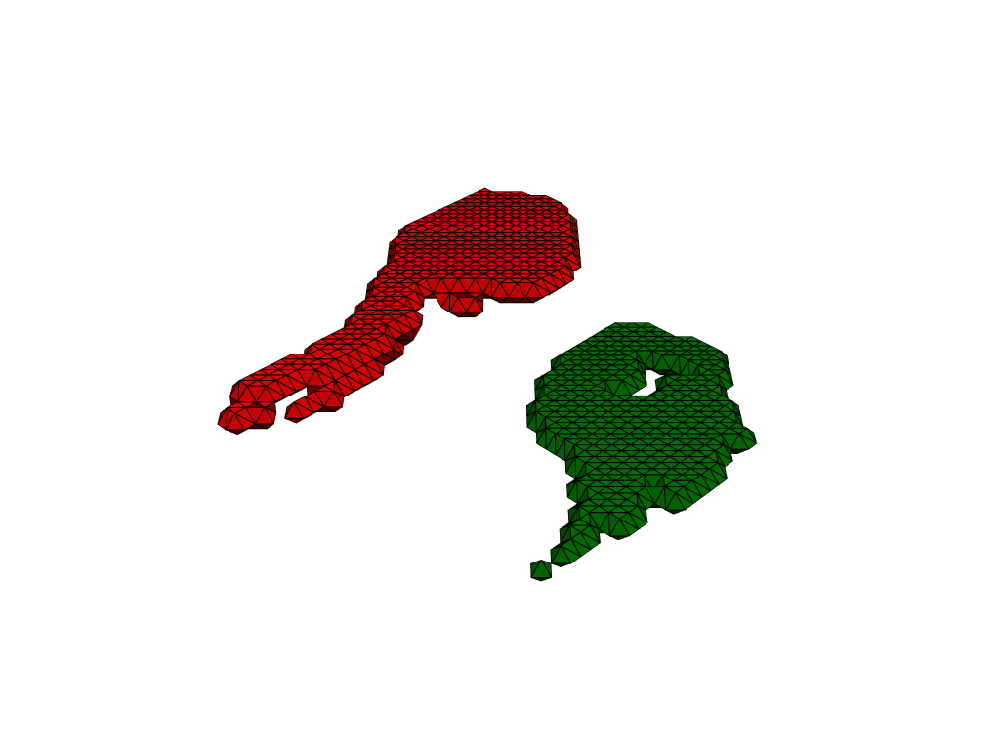
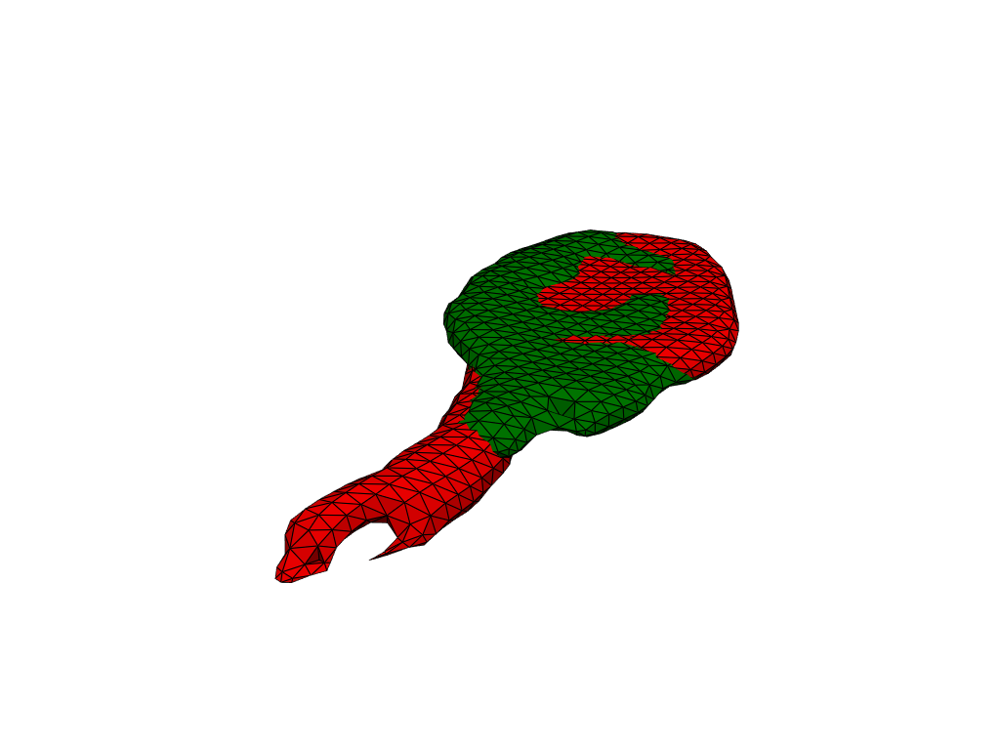

LDDMM: how to register a mesh against a template?#
TODO: create a how to fully emulating Nicolas’ script (i.e. including registration parameters)
[1]:
from pathlib import Path
import herbrain.lddmm as lddmm
import pyvista as pv
from polpo.preprocessing import (
Map,
PartiallyInitializedStep,
)
from polpo.preprocessing.load.pregnancy import PregnancyPilotSegmentationsLoader
from polpo.preprocessing.mesh.conversion import PvFromData
from polpo.preprocessing.mesh.filter import PvSelectColor
from polpo.preprocessing.mesh.io import PvWriter
from polpo.preprocessing.mesh.registration import PvAlign
from polpo.preprocessing.mesh.smoothing import PvSmoothTaubin
from polpo.preprocessing.mesh.transform import MeshCenterer
from polpo.preprocessing.mri import (
BRAINSTRUCT2COLOR,
MeshExtractorFromSegmentedImage,
MriImageLoader,
)
No CUDA runtime is found, using CUDA_HOME='/usr'
[2]:
STATIC_VIZ = True
if STATIC_VIZ:
pv.set_jupyter_backend("static")
[3]:
SOURCE_INDEX = 3
TARGET_INDEX = 14
STRUCT_NAME = "PostHipp"
OUTPUTS_DIR = Path("results") / "registration"
INITIAL_REGISTRATION_DIR = OUTPUTS_DIR / "initial_registration"
OUTPUTS_DIR.mkdir(exist_ok=False)
Load meshes#
We start by loading two selected meshes.
[5]:
files_pipe = PregnancyPilotSegmentationsLoader(
[SOURCE_INDEX, TARGET_INDEX],
as_dict=False,
)
mri2mesh = MriImageLoader() + MeshExtractorFromSegmentedImage() + PvFromData()
if STRUCT_NAME == -1:
struct_selector = lambda x: x
else:
struct_selector = PvSelectColor(
color=BRAINSTRUCT2COLOR[STRUCT_NAME],
extract_surface=True,
)
pipe = files_pipe + Map(mri2mesh + struct_selector)
[6]:
meshes = pipe()
INFO: Data has already been downloaded... using cached file ('/home/luisfpereira/.herbrain/data/pregnancy/Segmentations').
[7]:
pl = pv.Plotter(border=False)
pl.add_mesh(meshes[0], show_edges=True, color="red")
pl.add_mesh(meshes[1], show_edges=True, color="green")
pl.show()

Preprocessing#
As we can see in the visualization, meshes are not rigid aligned. Preprocessing takes care of this kind of details, before applying LDDMM.
[8]:
# TODO: consider decimation if above a given number of points
prep_pipe = Map(MeshCenterer() + PvSmoothTaubin(n_iter=20)) + PartiallyInitializedStep(
Step=lambda **kwargs: Map(PvAlign(**kwargs)),
_target=lambda x: x[0],
max_iterations=10,
)
[9]:
meshes = prep_pipe(meshes)
[mesh.points.shape[0] for mesh in meshes]
[9]:
[666, 607]
[10]:
pl = pv.Plotter(border=False)
pl.add_mesh(meshes[0], show_edges=True, color="red")
pl.add_mesh(meshes[1], show_edges=True, color="green")
pl.show()

LDDMM#
Save meshes in vtk format (as required by deformetrica).
[11]:
meshes_writer = Map(PvWriter(dirname=OUTPUTS_DIR, ext="vtk"))
mesh_filenames = [f"mesh_{which}" for which in ["source", "target"]]
mesh_filenames = meshes_writer(list(zip(mesh_filenames, meshes)))
Use LDDMM to register the meshes.
[12]:
# TODO: need to adapt registration parameters to substructure
registration_kwargs = dict(
kernel_width=4.0,
regularisation=1.0,
max_iter=2000,
freeze_control_points=False,
attachment_kernel_width=2.0,
metric="varifold",
tol=1e-16,
filter_cp=True,
threshold=0.75,
)
lddmm.registration(
mesh_filenames[0],
mesh_filenames[1],
output_dir=INITIAL_REGISTRATION_DIR,
**registration_kwargs,
)
Logger has been set to: DEBUG
>> No initial CP spacing given: using diffeo kernel width of 4.0
OMP_NUM_THREADS was not found in environment variables. An automatic value will be set.
OMP_NUM_THREADS will be set to 10
context has already been set
>> No specified state-file. By default, Deformetrica state will by saved in file: results/registration/initial_registration/deformetrica-state.p.
>> Using a Sobolev gradient for the template data with the ScipyLBFGS estimator memory length being larger than 1. Beware: that can be tricky.
instantiating kernel torch with kernel_width 4.0 and gpu_mode GpuMode.KERNEL. addr: 0x7b71f6479850
instantiating kernel torch with kernel_width 2.0 and gpu_mode GpuMode.KERNEL. addr: 0x7b71f648fb90
>> Set of 110 control points defined.
>> Momenta initialized to zero, for 1 subjects.
dtype=float32
>> Started estimator: ScipyOptimize
>> Scipy optimization method: L-BFGS-B
------------------------------------- Iteration: 1 -------------------------------------
------------------------------------- Iteration: 20 -------------------------------------
>> Log-likelihood = -4.003E+02 [ attachment = -2.139E+02 ; regularity = -1.864E+02 ]
------------------------------------- Iteration: 40 -------------------------------------
>> Log-likelihood = -3.077E+02 [ attachment = -1.116E+02 ; regularity = -1.961E+02 ]
------------------------------------- Iteration: 60 -------------------------------------
>> Log-likelihood = -2.875E+02 [ attachment = -9.781E+01 ; regularity = -1.897E+02 ]
------------------------------------- Iteration: 80 -------------------------------------
>> Log-likelihood = -2.784E+02 [ attachment = -8.946E+01 ; regularity = -1.889E+02 ]
------------------------------------- Iteration: 100 -------------------------------------
>> Log-likelihood = -2.720E+02 [ attachment = -8.605E+01 ; regularity = -1.859E+02 ]
------------------------------------- Iteration: 120 -------------------------------------
>> Log-likelihood = -2.689E+02 [ attachment = -8.548E+01 ; regularity = -1.834E+02 ]
>> Log-likelihood = -2.687E+02 [ attachment = -8.514E+01 ; regularity = -1.836E+02 ]
------------------------------------- Iteration: 140 -------------------------------------
>> Log-likelihood = -2.666E+02 [ attachment = -8.320E+01 ; regularity = -1.834E+02 ]
------------------------------------- Iteration: 160 -------------------------------------
>> Log-likelihood = -2.653E+02 [ attachment = -8.187E+01 ; regularity = -1.834E+02 ]
------------------------------------- Iteration: 180 -------------------------------------
>> Log-likelihood = -2.643E+02 [ attachment = -8.171E+01 ; regularity = -1.826E+02 ]
------------------------------------- Iteration: 200 -------------------------------------
>> Log-likelihood = -2.635E+02 [ attachment = -8.052E+01 ; regularity = -1.830E+02 ]
------------------------------------- Iteration: 220 -------------------------------------
>> Log-likelihood = -2.628E+02 [ attachment = -8.034E+01 ; regularity = -1.825E+02 ]
------------------------------------- Iteration: 240 -------------------------------------
>> Log-likelihood = -2.621E+02 [ attachment = -7.918E+01 ; regularity = -1.829E+02 ]
------------------------------------- Iteration: 260 -------------------------------------
>> Log-likelihood = -2.615E+02 [ attachment = -7.934E+01 ; regularity = -1.822E+02 ]
------------------------------------- Iteration: 280 -------------------------------------
>> Log-likelihood = -2.610E+02 [ attachment = -7.919E+01 ; regularity = -1.818E+02 ]
>> Log-likelihood = -2.609E+02 [ attachment = -7.903E+01 ; regularity = -1.819E+02 ]
------------------------------------- Iteration: 300 -------------------------------------
>> Log-likelihood = -2.601E+02 [ attachment = -7.898E+01 ; regularity = -1.812E+02 ]
------------------------------------- Iteration: 320 -------------------------------------
>> Log-likelihood = -2.596E+02 [ attachment = -7.822E+01 ; regularity = -1.814E+02 ]
------------------------------------- Iteration: 340 -------------------------------------
>> Log-likelihood = -2.591E+02 [ attachment = -7.824E+01 ; regularity = -1.809E+02 ]
------------------------------------- Iteration: 360 -------------------------------------
>> Log-likelihood = -2.586E+02 [ attachment = -7.756E+01 ; regularity = -1.810E+02 ]
------------------------------------- Iteration: 380 -------------------------------------
>> Log-likelihood = -2.581E+02 [ attachment = -7.781E+01 ; regularity = -1.803E+02 ]
------------------------------------- Iteration: 400 -------------------------------------
>> Log-likelihood = -2.578E+02 [ attachment = -7.768E+01 ; regularity = -1.801E+02 ]
------------------------------------- Iteration: 420 -------------------------------------
>> Log-likelihood = -2.575E+02 [ attachment = -7.750E+01 ; regularity = -1.800E+02 ]
------------------------------------- Iteration: 440 -------------------------------------
>> Log-likelihood = -2.572E+02 [ attachment = -7.715E+01 ; regularity = -1.800E+02 ]
------------------------------------- Iteration: 460 -------------------------------------
>> Log-likelihood = -2.568E+02 [ attachment = -7.729E+01 ; regularity = -1.795E+02 ]
------------------------------------- Iteration: 480 -------------------------------------
>> Log-likelihood = -2.566E+02 [ attachment = -7.700E+01 ; regularity = -1.796E+02 ]
------------------------------------- Iteration: 500 -------------------------------------
>> Log-likelihood = -2.563E+02 [ attachment = -7.671E+01 ; regularity = -1.796E+02 ]
------------------------------------- Iteration: 520 -------------------------------------
>> Log-likelihood = -2.559E+02 [ attachment = -7.703E+01 ; regularity = -1.789E+02 ]
------------------------------------- Iteration: 540 -------------------------------------
>> Log-likelihood = -2.555E+02 [ attachment = -7.708E+01 ; regularity = -1.784E+02 ]
------------------------------------- Iteration: 560 -------------------------------------
>> Log-likelihood = -2.551E+02 [ attachment = -7.713E+01 ; regularity = -1.780E+02 ]
------------------------------------- Iteration: 580 -------------------------------------
>> Log-likelihood = -2.546E+02 [ attachment = -7.654E+01 ; regularity = -1.781E+02 ]
------------------------------------- Iteration: 600 -------------------------------------
>> Log-likelihood = -2.541E+02 [ attachment = -7.659E+01 ; regularity = -1.775E+02 ]
------------------------------------- Iteration: 620 -------------------------------------
>> Log-likelihood = -2.536E+02 [ attachment = -7.662E+01 ; regularity = -1.770E+02 ]
------------------------------------- Iteration: 640 -------------------------------------
>> Log-likelihood = -2.532E+02 [ attachment = -7.691E+01 ; regularity = -1.763E+02 ]
------------------------------------- Iteration: 660 -------------------------------------
>> Log-likelihood = -2.527E+02 [ attachment = -7.661E+01 ; regularity = -1.761E+02 ]
------------------------------------- Iteration: 680 -------------------------------------
>> Log-likelihood = -2.522E+02 [ attachment = -7.681E+01 ; regularity = -1.754E+02 ]
------------------------------------- Iteration: 700 -------------------------------------
>> Log-likelihood = -2.515E+02 [ attachment = -7.608E+01 ; regularity = -1.754E+02 ]
------------------------------------- Iteration: 720 -------------------------------------
>> Log-likelihood = -2.506E+02 [ attachment = -7.584E+01 ; regularity = -1.747E+02 ]
------------------------------------- Iteration: 740 -------------------------------------
>> Log-likelihood = -2.497E+02 [ attachment = -7.680E+01 ; regularity = -1.729E+02 ]
------------------------------------- Iteration: 760 -------------------------------------
>> Log-likelihood = -2.487E+02 [ attachment = -7.521E+01 ; regularity = -1.735E+02 ]
------------------------------------- Iteration: 780 -------------------------------------
>> Log-likelihood = -2.480E+02 [ attachment = -7.508E+01 ; regularity = -1.729E+02 ]
------------------------------------- Iteration: 800 -------------------------------------
>> Log-likelihood = -2.472E+02 [ attachment = -7.469E+01 ; regularity = -1.725E+02 ]
------------------------------------- Iteration: 820 -------------------------------------
>> Log-likelihood = -2.464E+02 [ attachment = -7.468E+01 ; regularity = -1.717E+02 ]
------------------------------------- Iteration: 840 -------------------------------------
>> Log-likelihood = -2.456E+02 [ attachment = -7.489E+01 ; regularity = -1.707E+02 ]
------------------------------------- Iteration: 860 -------------------------------------
>> Log-likelihood = -2.448E+02 [ attachment = -7.480E+01 ; regularity = -1.700E+02 ]
------------------------------------- Iteration: 880 -------------------------------------
>> Log-likelihood = -2.440E+02 [ attachment = -7.417E+01 ; regularity = -1.698E+02 ]
------------------------------------- Iteration: 900 -------------------------------------
>> Log-likelihood = -2.431E+02 [ attachment = -7.377E+01 ; regularity = -1.693E+02 ]
------------------------------------- Iteration: 920 -------------------------------------
>> Log-likelihood = -2.424E+02 [ attachment = -7.316E+01 ; regularity = -1.692E+02 ]
------------------------------------- Iteration: 940 -------------------------------------
>> Log-likelihood = -2.417E+02 [ attachment = -7.338E+01 ; regularity = -1.683E+02 ]
------------------------------------- Iteration: 960 -------------------------------------
>> Log-likelihood = -2.410E+02 [ attachment = -7.292E+01 ; regularity = -1.681E+02 ]
------------------------------------- Iteration: 980 -------------------------------------
>> Log-likelihood = -2.404E+02 [ attachment = -7.307E+01 ; regularity = -1.674E+02 ]
------------------------------------- Iteration: 1000 -------------------------------------
>> Log-likelihood = -2.399E+02 [ attachment = -7.352E+01 ; regularity = -1.664E+02 ]
------------------------------------- Iteration: 1020 -------------------------------------
>> Log-likelihood = -2.393E+02 [ attachment = -7.352E+01 ; regularity = -1.658E+02 ]
------------------------------------- Iteration: 1040 -------------------------------------
>> Log-likelihood = -2.388E+02 [ attachment = -7.364E+01 ; regularity = -1.651E+02 ]
------------------------------------- Iteration: 1060 -------------------------------------
>> Log-likelihood = -2.381E+02 [ attachment = -7.337E+01 ; regularity = -1.647E+02 ]
------------------------------------- Iteration: 1080 -------------------------------------
>> Log-likelihood = -2.375E+02 [ attachment = -7.246E+01 ; regularity = -1.651E+02 ]
------------------------------------- Iteration: 1100 -------------------------------------
>> Log-likelihood = -2.371E+02 [ attachment = -7.257E+01 ; regularity = -1.645E+02 ]
>> Log-likelihood = -2.370E+02 [ attachment = -7.247E+01 ; regularity = -1.646E+02 ]
------------------------------------- Iteration: 1120 -------------------------------------
>> Log-likelihood = -2.365E+02 [ attachment = -7.303E+01 ; regularity = -1.635E+02 ]
------------------------------------- Iteration: 1140 -------------------------------------
>> Log-likelihood = -2.360E+02 [ attachment = -7.322E+01 ; regularity = -1.628E+02 ]
------------------------------------- Iteration: 1160 -------------------------------------
>> Log-likelihood = -2.355E+02 [ attachment = -7.267E+01 ; regularity = -1.628E+02 ]
------------------------------------- Iteration: 1180 -------------------------------------
>> Log-likelihood = -2.349E+02 [ attachment = -7.177E+01 ; regularity = -1.632E+02 ]
------------------------------------- Iteration: 1200 -------------------------------------
>> Log-likelihood = -2.344E+02 [ attachment = -7.214E+01 ; regularity = -1.623E+02 ]
------------------------------------- Iteration: 1220 -------------------------------------
>> Log-likelihood = -2.338E+02 [ attachment = -7.245E+01 ; regularity = -1.614E+02 ]
------------------------------------- Iteration: 1240 -------------------------------------
>> Log-likelihood = -2.334E+02 [ attachment = -7.217E+01 ; regularity = -1.612E+02 ]
------------------------------------- Iteration: 1260 -------------------------------------
>> Log-likelihood = -2.328E+02 [ attachment = -7.197E+01 ; regularity = -1.609E+02 ]
------------------------------------- Iteration: 1280 -------------------------------------
>> Log-likelihood = -2.322E+02 [ attachment = -7.162E+01 ; regularity = -1.606E+02 ]
------------------------------------- Iteration: 1300 -------------------------------------
>> Log-likelihood = -2.317E+02 [ attachment = -7.160E+01 ; regularity = -1.601E+02 ]
------------------------------------- Iteration: 1320 -------------------------------------
>> Log-likelihood = -2.311E+02 [ attachment = -7.159E+01 ; regularity = -1.595E+02 ]
------------------------------------- Iteration: 1340 -------------------------------------
>> Log-likelihood = -2.307E+02 [ attachment = -7.176E+01 ; regularity = -1.589E+02 ]
------------------------------------- Iteration: 1360 -------------------------------------
>> Log-likelihood = -2.301E+02 [ attachment = -7.092E+01 ; regularity = -1.592E+02 ]
------------------------------------- Iteration: 1380 -------------------------------------
>> Log-likelihood = -2.296E+02 [ attachment = -7.160E+01 ; regularity = -1.580E+02 ]
------------------------------------- Iteration: 1400 -------------------------------------
>> Log-likelihood = -2.289E+02 [ attachment = -7.155E+01 ; regularity = -1.574E+02 ]
------------------------------------- Iteration: 1420 -------------------------------------
>> Log-likelihood = -2.285E+02 [ attachment = -7.031E+01 ; regularity = -1.582E+02 ]
------------------------------------- Iteration: 1440 -------------------------------------
>> Log-likelihood = -2.280E+02 [ attachment = -6.993E+01 ; regularity = -1.580E+02 ]
------------------------------------- Iteration: 1460 -------------------------------------
>> Log-likelihood = -2.276E+02 [ attachment = -7.018E+01 ; regularity = -1.574E+02 ]
>> Log-likelihood = -2.275E+02 [ attachment = -7.000E+01 ; regularity = -1.575E+02 ]
------------------------------------- Iteration: 1480 -------------------------------------
>> Log-likelihood = -2.271E+02 [ attachment = -7.092E+01 ; regularity = -1.562E+02 ]
------------------------------------- Iteration: 1500 -------------------------------------
>> Log-likelihood = -2.267E+02 [ attachment = -7.093E+01 ; regularity = -1.558E+02 ]
------------------------------------- Iteration: 1520 -------------------------------------
>> Log-likelihood = -2.263E+02 [ attachment = -7.129E+01 ; regularity = -1.550E+02 ]
------------------------------------- Iteration: 1540 -------------------------------------
>> Log-likelihood = -2.259E+02 [ attachment = -7.170E+01 ; regularity = -1.542E+02 ]
------------------------------------- Iteration: 1560 -------------------------------------
>> Log-likelihood = -2.255E+02 [ attachment = -7.142E+01 ; regularity = -1.541E+02 ]
------------------------------------- Iteration: 1580 -------------------------------------
>> Log-likelihood = -2.250E+02 [ attachment = -7.076E+01 ; regularity = -1.543E+02 ]
------------------------------------- Iteration: 1600 -------------------------------------
>> Log-likelihood = -2.247E+02 [ attachment = -7.123E+01 ; regularity = -1.535E+02 ]
------------------------------------- Iteration: 1620 -------------------------------------
>> Log-likelihood = -2.244E+02 [ attachment = -7.134E+01 ; regularity = -1.531E+02 ]
------------------------------------- Iteration: 1640 -------------------------------------
>> Log-likelihood = -2.241E+02 [ attachment = -7.120E+01 ; regularity = -1.529E+02 ]
------------------------------------- Iteration: 1660 -------------------------------------
>> Log-likelihood = -2.237E+02 [ attachment = -7.110E+01 ; regularity = -1.526E+02 ]
------------------------------------- Iteration: 1680 -------------------------------------
>> Log-likelihood = -2.235E+02 [ attachment = -7.107E+01 ; regularity = -1.524E+02 ]
------------------------------------- Iteration: 1700 -------------------------------------
>> Log-likelihood = -2.231E+02 [ attachment = -7.097E+01 ; regularity = -1.521E+02 ]
------------------------------------- Iteration: 1720 -------------------------------------
>> Log-likelihood = -2.228E+02 [ attachment = -7.117E+01 ; regularity = -1.516E+02 ]
------------------------------------- Iteration: 1740 -------------------------------------
>> Log-likelihood = -2.225E+02 [ attachment = -7.156E+01 ; regularity = -1.510E+02 ]
------------------------------------- Iteration: 1760 -------------------------------------
>> Log-likelihood = -2.222E+02 [ attachment = -7.115E+01 ; regularity = -1.511E+02 ]
------------------------------------- Iteration: 1780 -------------------------------------
>> Log-likelihood = -2.218E+02 [ attachment = -7.042E+01 ; regularity = -1.514E+02 ]
------------------------------------- Iteration: 1800 -------------------------------------
>> Log-likelihood = -2.215E+02 [ attachment = -7.054E+01 ; regularity = -1.510E+02 ]
------------------------------------- Iteration: 1820 -------------------------------------
>> Log-likelihood = -2.213E+02 [ attachment = -7.066E+01 ; regularity = -1.506E+02 ]
------------------------------------- Iteration: 1840 -------------------------------------
>> Log-likelihood = -2.211E+02 [ attachment = -7.082E+01 ; regularity = -1.502E+02 ]
------------------------------------- Iteration: 1860 -------------------------------------
>> Log-likelihood = -2.208E+02 [ attachment = -7.101E+01 ; regularity = -1.498E+02 ]
------------------------------------- Iteration: 1880 -------------------------------------
>> Log-likelihood = -2.205E+02 [ attachment = -7.065E+01 ; regularity = -1.498E+02 ]
------------------------------------- Iteration: 1900 -------------------------------------
>> Log-likelihood = -2.201E+02 [ attachment = -7.025E+01 ; regularity = -1.499E+02 ]
------------------------------------- Iteration: 1920 -------------------------------------
>> Log-likelihood = -2.198E+02 [ attachment = -7.081E+01 ; regularity = -1.490E+02 ]
------------------------------------- Iteration: 1940 -------------------------------------
>> Log-likelihood = -2.196E+02 [ attachment = -7.073E+01 ; regularity = -1.488E+02 ]
------------------------------------- Iteration: 1960 -------------------------------------
>> Log-likelihood = -2.193E+02 [ attachment = -7.073E+01 ; regularity = -1.486E+02 ]
------------------------------------- Iteration: 1980 -------------------------------------
>> Log-likelihood = -2.190E+02 [ attachment = -7.080E+01 ; regularity = -1.482E+02 ]
------------------------------------- Iteration: 2000 -------------------------------------
>> Log-likelihood = -2.187E+02 [ attachment = -7.051E+01 ; regularity = -1.482E+02 ]
>> Gradient at Termination: 584.2678895664351
>> `callback` raised `StopIteration`.
>> Estimation took: 02 minutes and 40 seconds
instantiating kernel torch with kernel_width 4.0 and gpu_mode GpuMode.KERNEL. addr: 0x7b71f5ab2710
Deformetrica.__del__()
[12]:
time.struct_time(tm_year=2025, tm_mon=3, tm_mday=18, tm_hour=1, tm_min=45, tm_sec=57, tm_wday=1, tm_yday=77, tm_isdst=0)